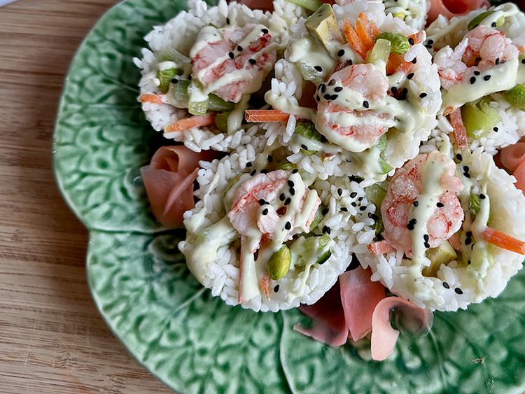

Wasabi Shrimp Sushi Cups

Wasabi Shrimp Sushi Cups
These wasabi shrimp sushi cups are perfect for you if rolling sushi is
not in your wheelhouse. Certainly filling a muffin cup is! Prepare sushi
rice according to the package instructions, but do not fluff—the success of
this dish depends on very sticky rice. Use a silicone muffin pan, if you
have one. While the rice cooks, prepare the filling ingredients.
Ingredients
Wasabi Aioli
- 1 tbsp. wasabi paste
- 1 tsp. soy sauce
- 2 tbsp. mayonnaise
Sushi Cups
- 1 cup sushi rice, prepared according to package directions
- 1/2 cup matchstick-cut carrots
- 1/2 cup matchstick-cut cucumbers
- 1/2 cup frozen shelled edamame, thawed
- 4 cooked shrimp, sliced in half lengthwise
- 2 tbsp. ginger to taste (optional)
- 1/2 teaspoon black sesame seeds (optional)
Steps
- For wasabi aioli; combine wasabi paste, soy sauce, and mayonnaise in a
small, zippered food storage bag. Gently squeeze the bag to combine
ingredients. Taste and add more wasabi paste, if desired. Seal the bag and
refrigerate.
- Place about 1/8 cup cooked and cooled rice in each of 8 silicone
muffin cups. Press rice firmly into the cup, using damp fingertips. Shape
some of the rice up the sides of the cup. Refrigerate at least 20
minutes.
- To serve, fill rice cups with matchstick carrots, matchstick
cucumbers, and edamame. Place one shrimp half on top of each filled
cup.
- Snip the tip off 1 corner of wasabi aioli bag, and squeeze contents
across the top of each filled cup. Sprinkle with black sesame seeds. Serve
immediately with pickled ginger.
Home